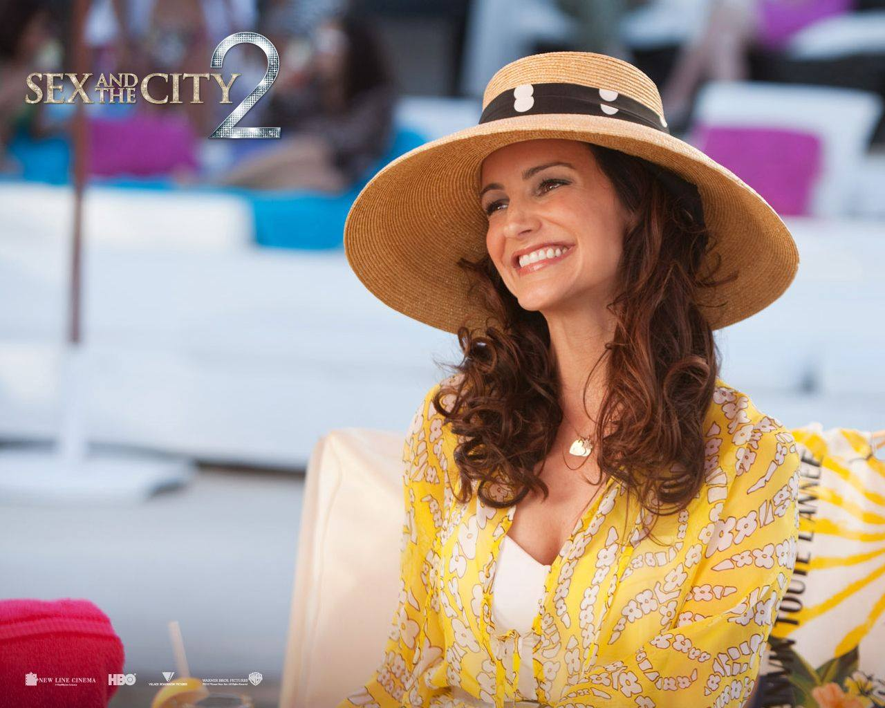

Sex and the City 2 is a 2010 American romantic comedy film co-written, produced and directed by Michael Patrick King. It is the sequel to the 2008 film Sex and the City, which is based on the HBO TV series of the same name.The film was released in cinemas on May 27, 2010, in the United States and May 28, 2010, in the United Kingdom. The film stars Sarah Jessica Parker, Kim Cattrall, Kristin Davis, Cynthia Nixon and Chris Noth, who reprised their roles from the previous film and television series. It also features cameos from Liza Minnelli, Miley Cyrus, Tim Gunn, Ron White, Omid Djalili and Penélope Cruz, as well as Broadway actors, Norm Lewis, Kelli O'Hara, and Ryan Silverman. It received negative reviews from critics, but was a commercial success.After months of speculation, the cast confirmed in February 2009 that a sequel was in the works. Filming began in August 2009.The sequel is noticeably different from its predecessor, and includes more exotic locales than the original. King credits this to the experience he had promoting the original film in such locales. He was also inspired by the recession to write something bigger more akin to the extravagant adventures and escapist comedies of the 1930s.The location of Abu Dhabi was chosen because of its high fashion culture (although the authorities later revoked filming clearance) and also that it was a location relatively free from the recession.All four stars, Sarah Jessica Parker, Cynthia Nixon, Kristin Davis, and Kim Cattrall, returned in the sequel; Chris Noth also signed on to reprise the role of Mr. Big.Evan Handler returned as Harry Goldenblatt, John Corbett as Aiden Shaw, David Eigenberg played Steve Brady once more, Willie Garson returned as Stanford Blatch, and Mario Cantone again played Anthony Marentino, making the original cast almost complete. In addition, Michael Patrick King wrote and directed again, and Patricia Field once again took charge of the costumes and wardrobe. Hats were once again created by Prudence Millinery for Vivienne Westwood.Entertainment Weekly confirmed that the budget for the film was US$95 million,exactly $30 million greater than the budget for the first film. Sarah Jessica Parker was paid $15 million for her dual role as a producer and starring as Carrie Bradshaw.Filming in New York was postponed to the end of July as Emirati authorities refused clearance for filming in the emirate. As a result, the Abu Dhabi segment of the film was filmed in Morocco.All four leading ladies and other cast and crew were photographed filming scenes in Morocco in November 2009, where they had originally planned to shoot for 13 days, which had to be extended to almost six weeks. Some of the scenes were filmed at Amanjena, outside of Marrakesh.The sequel officially began filming on September 1, 2009 and continued until the end of the year. Photos of all four leading women filming scenes around New York together and separately have emerged, featuring present-day scenes as well as a range of looks believed to be flashbacks from the earlier years of Carrie, Samantha, Miranda, and Charlotte's long-standing friendships. Images of Samantha in a wedding dress have also been released.Additionally, scenes featuring prominent characters such as Mr. Big, Magda, Smith, Steve, and the children of Miranda and Charlotte have been filmed and photographed.

Plot
The film begins with Carrie, Samantha, Charlotte, and Miranda meeting up with each other which turns into a flashback to how Carrie arrived in New York City in 1986, then met Charlotte one year later, Miranda in 1989. She also met Samantha, when she was bartender at a bar but she doesn't tell a year.All are married but Samantha, who at 52, is desperately trying to keep her libido alive with the help of "Suzanne Somers and her team of doctors" to keep her menopause at bay. The four of them attend Anthony and Stanford's wedding, where Carrie serves as "best man." Miranda quits her job after the misogynistic new managing partner disrespects her once too often. Charlotte's two children are a handful and she's worried that Harry is attracted to their buxom Irish nanny, Erin. Carrie's marriage to Mr. Big has settled down, though they differ on how to spend their spare time. For their anniversary, Carrie gives Mr. Big a vintage Rolex watch engraved with a romantic message, while he, much to her dismay, shows her a new TV in their bedroom as his gift, which Big says they can use to watch old movies together, something they did at the hotel at Anthony and Stanford's wedding and seemed to enjoy. Carrie, however, is disappointed, as she had hoped for jewelry as a gift.Meanwhile, Samantha has been approached by an Arab sheikh to devise a PR campaign for his business. He offers to fly her and her friends on an all-expenses-paid luxury vacation to Abu Dhabi. The girls happily accept, although Carrie is worried about the separation from Big and Charlotte is worried about leaving her husband alone with the nanny. Only Miranda, unfettered by a job for the first time in her life, is enthusiastic. Upon entering Abu Dhabi, Samantha's hormone-enhancing drugs are confiscated under UAE law. This renders her devoid of estrogen; her famous libido goes dead. Charlotte tries to call Harry every few minutes; Miranda revels in the luxury surrounding her, while Carrie befriends her manservant, Gaurau, who is an underpaid temporary worker from India.Carrie runs into her former lover, Aidan. He proposes dinner à deux at his hotel and she decides to meet Aidan for dinner. The dinner is very enjoyable, with the two discussing old times. Aidan remarks on the ways Carrie is "not like other women". In a moment of remembered passion, they kiss. Carrie runs away in panic and returns to the hotel. Back at the hotel, Miranda and Charlotte have drinks together and discuss the difficulties of motherhood. Carrie arrives, tells her friends about the kiss, and asks them whether she should tell Big, as they have no secrets between them. Miranda reflects on the events of the previous film, when her husband, Steve, told her about his affair. Samantha counsels Carrie to wait before deciding anything. Carrie opts to call Big to tell him. Big is silent upon hearing the news, and after saying a few words, hangs up.The four women find their style and Western attitudes contrast with Muslim customs. While on a date with a handsome Dane, Samantha is arrested for public indecency after fondling him at a restaurant and making out with him on the beach. With the Sheikh's intervention, Samantha is released, but is left with a permanent police record. Worse, the Sheikh decides to cancel the PR meeting and ceases paying for the remainder of the women's luxurious stay. They are told that have 1 hour to either pay for the rest of their stay or leave. They quickly pack their bags and leave, but must return to the souq to find Carrie's passport. When Samantha's flamboyance nearly incites a riot, the girls are rescued by a group of Emirati women who share their sense of style under their black robes.When Carrie returns home, she finds the bedroom television removed and Big gone. She passes an anxious day, at the end of which he returns. Big tells her that although he was "pretty torn up", he realizes that what she needs is something to remind her at all times that she is married. He hands her a jewelry box, which reveals an engagement ring set with a black diamond. When Carrie asks him why a black diamond, he says, "Because you're not like anyone else", echoing Aidan's earlier comment.The problems the women faced at the beginning of the film are resolved. Big and Carrie combine their interests; Charlotte's nanny, Erin, turns out to be a lesbian and is no threat to her marriage; Miranda finds a new job at a more laid back and diverse law firm where she is appreciated, and Samantha stays the same, even meeting up with the Danish architect she met in Abu Dhabi for sex on the beach, this time a beach on The Hamptons.